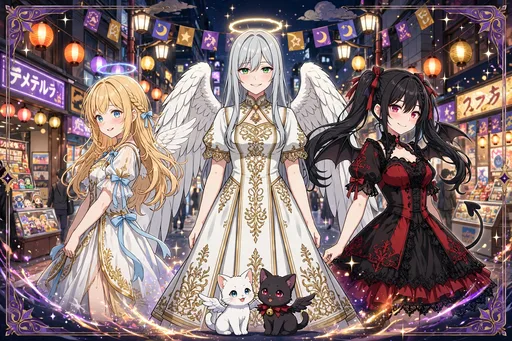
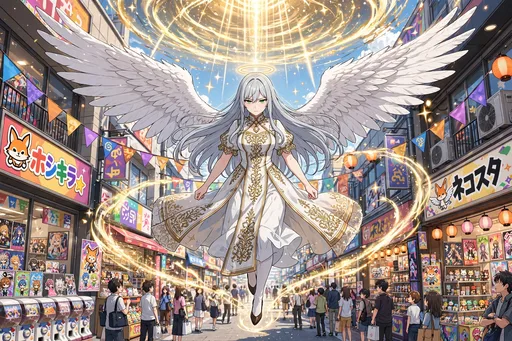
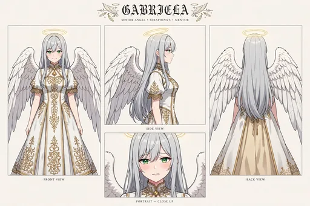
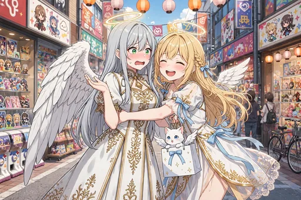

セラフィナ 第7弾『先輩視察編』イラストパック

ストーリー紹介
先輩天使ガブリエラ（銀髪ロング＋翠の瞳、大きな白い翼の正装姿）が、セラフィナの日本橋での暮らしぶりを視察に訪れる30枚です。手帳片手に厳しくチェックするはずが、たこ焼きの一口、カラオケ、サウナの「整う」に少しずつ染まっていき、報告書の「堕落」を「順応」に書き直して、最後は滞在延長を申請するまでの物語。ガブリエラの設定画もあわせて収録し、今回からガチャ・図鑑にも全点収録しました。
手帳片手に厳しくチェックするはずの視察は、たこ焼きの一口からほころび始めます。カラオケ、サウナの「整う」体験と、日本橋の日常に少しずつ染まっていく先輩天使。報告書の「堕落」の文字を「順応」に書き直し、最後は滞在延長を申請するまでの変化を描く30枚です。セラフィナを見守る立場の側にも「蝕まれ」が広がっていく、群像劇らしい一編です。
ダウンロード販売（ZIP 3分割）／全年齢／BOOTH「angel222」で販売中
商品情報
| タイトル | セラフィナ 第7弾『先輩視察編』イラストパック｜見習い天使の現代日本コメディ |
|---|---|
| 収録内容 | イラスト30点＋設定画（ダウンロード販売） |
| 価格 | 500円 |
| 販売 | BOOTH「angel222」 https://angel222.booth.pm/items/9076315 |
| 備考 | 全年齢。登場するキャラクターは架空の存在です。イラストにはAI生成を含みます |
場面紹介（全30枚＋設定画）



- 1. ガブリエラ設定画 — 先輩天使ガブリエラの設定画。
- 2. 日本橋へ降臨するガブリエラ — 金色の光の渦から、凛とした姿で日本橋へ降臨するガブリエラ。
- 3. 再会のハグ — 駆け寄って抱きつくセラフィナに、照れるガブリエラ。
- 4. 視察開始 — 手帳とペンを手に、チェック項目を読み上げるガブリエラ。
- 5. 部屋の視察 — セラフィナの部屋を視察する場面。
- 6. 夜の報告書執筆 — 夜、視察の報告書を執筆するガブリエラの横で、お茶を出すセラフィナ。
- 7. フィギュア店で固まる先輩 — フィギュア店で、自分そっくりの上級天使フィギュアを見つけて固まるガブリエラ。
- 8. ガチャ監督のはずが — ガチャを監督するはずが、こっそり自分も回してしまうガブリエラ。
- 9. たこ焼き初体験 — たこ焼きを品定めするような顔で眺めていたガブリエラが、一口食べて目を輝かせる場面。
- 10. たこ焼きのおかわり — たこ焼きのおかわりを頼んでしまい、我に返って赤面するガブリエラ。
- 11. メイドカフェ視察 — メイドカフェを視察する場面。
- 12. クレーンゲームは訓練 — クレーンゲームを「訓練」と称して、本気の集中を見せるガブリエラ。
- 13. 子猫ぬいぐるみ獲得 — 子猫のぬいぐるみを取って誇らしげなガブリエラと、拍手するセラフィナ、肩のモコ。
- 14. カラオケで聖歌隊 — カラオケで聖歌隊のように直立して歌うガブリエラ。
- 15. カラオケでノリノリ — タンバリンを振って拳を上げるまでに染まったガブリエラのカラオケ場面。
- 16. サウナで「整う」 — サウナで「整う」を体験するガブリエラ。
- 17. 銭湯上がりのコーヒー牛乳 — 銭湯上がり、腰に手を当ててコーヒー牛乳を飲むガブリエラ。
- 18. コンビニスイーツ調査 — コンビニスイーツを「調査」と称して買い込むガブリエラ。
- 19. 深夜のカップ麺 — 深夜のカップ麺に感動の涙を流すガブリエラ。
- 20. ルチアと初対面 — ルチアと初対面する場面。
- 21. 神社で二礼二拍手一礼 — 神社で丁寧に二礼二拍手一礼をするガブリエラ。
- 22. 雨の日本橋で相合傘 — 雨の日本橋で、透明傘を仲良くさすセラフィナとガブリエラ。
- 23. 報告書の書き直し — 報告書の「堕落」という言葉を「順応」に書き直して悩むガブリエラ。
- 24. 私服の試着 — 私服を試着して鏡の前でまんざらでもないガブリエラと、サムズアップのセラフィナ。
- 25. 関西弁が移った先輩 — 思わず関西弁が出て口を押さえるガブリエラと、爆笑のセラフィナ、したり顔のルチアとノワール。
- 26. 二人で癒しの本分 — 疲れた会社員の両脇で、そっと肩に手を添えるセラフィナとガブリエラ。
- 27. 滞在延長申請 — 「もう少し様子を見る」と滞在延長申請書を書くガブリエラ。
- 28. みんなで自撮り — セラフィナ、ルチア、ガブリエラと、モコとノワールで撮る自撮り風のグループ写真。
- 29. 夕暮れのオタロード — 夕暮れのオタロードを、紙袋を提げて笑い合って歩くセラフィナとガブリエラ。
- 30. ネオン色に染まる輪 — ショーウィンドウの映り込みで、自分の輪がネオン色に染まっていることに気づくガブリエラ。
- 31. 先輩キービジュアル — 日本橋の夜景を背に、中央にガブリエラ、左にセラフィナ、右にルチア、足元にモコとノワール。
ほかのイラストパック
物語の次は、第8弾『神仏ご近所編』です。